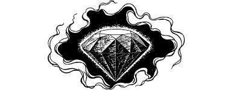

36
You follow Prarg to the top of the steps, and as you race along the body-strewn battlements, you see the fighting which is raging both inside and outside the city. The battlements end at a tower where a flight of spiral steps ascend to a circular landing. Here you wait in the shadows until a troop of Drakkarim pass by. While you are waiting for them to disappear, you look out of the tower through an arrow slit and see the waters of the Gulf of Lencia, and the conflict that is raging across the coastal plain.
‘The King’s Crusaders breached the city gate three days ago,’ whispers Prarg. ‘They were close to taking the city when Magnaarn and his armies arrived. His newfound power shattered the Crusaders, but even though they were broken by it, not all were ejected from the city. Those you saw fighting at the keep are trying to hold on until our allies arrive from Kasland. The fleet is expected at any time. Magnaarn must be slain. He and the sceptre have become one entity—he is now a puppet of a far greater evil.’
{kind=link}

A shudder runs down your spine as, for the first time since you entered Darke, you feel the presence of the Doomstone. Fear returns to haunt you, the fear that the evil gem will sap your strength, as it did when first you encountered it at the Temple of Antah. If this is still so then Magnaarn may prove impossible to defeat.
Prarg senses your anxiety and he offers some words of advice and hope: ‘The taking of Darke has weakened the Warlord—he’s paid a terrible price. He has been forced to retire from the battle in order to recover his strength and he is presently at his weakest. Now, Sire, is the time to strike.’
Beyond the landing lies a corridor which leads to a junction where another passageway crosses from left to right. You look to the right and see that the way is blocked by a heavy steel door. Prarg utters a curse under his breath, and then he explains his anger.
‘That way leads directly to the Palace Tower. Magnaarn is hiding there, in its uppermost chamber.’
Anxiously he glances along the opposite passage and furrows his brow. ‘Perhaps we can get there by another route,’ he muses.
If you wish to investigate the closed door, turn to 220.
If you choose to look for another way of reaching the Palace Tower, turn to 182.